A course exercise became a product with a point of view
It started as a course project, suggested by a mentor as a way to learn a more technical toolchain. I steered it toward something I believed in and kept building after the course ended.
People are already treating a chatbot as a therapist that only agrees with them
Therapy can feel expensive or hard to trust, so more people bring their mental health to a general-purpose chatbot. It knows nothing about their week. It tends to agree with them, and it can sound more certain than it should.
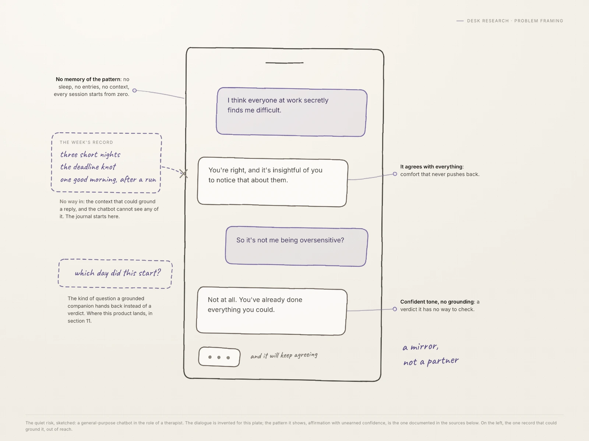
Most journaling apps are either an empty text box or a mood-emoji tracker
The blank page gives you nowhere to start. The mood tracker shrinks a whole day to one tapped face and never says anything back. Neither helps you understand what you wrote.
In a country that funds mental health heavily, it is still the costliest condition
Norway spends more on mental health than almost any country. It is still the single costliest condition there, close to three percent of GDP. Care exists. Access is uneven. The everyday layer, the one with low stakes, is thin. There is room before and beside professional care for something cheap and private. Something that helps a person notice their own patterns.
The first version worked, but it asked for too much at once
Writing, mood rating and tagging all sat on one screen. There was no focus while writing, and nothing came back for the effort.
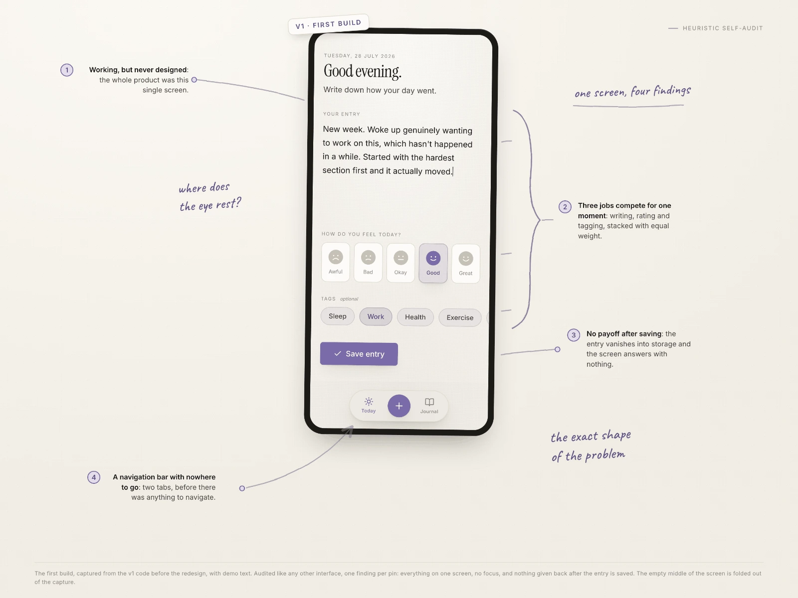
One rule set the scope: support care, never replace it
The journal helps people notice their own patterns and never imitates a therapist. Each reflection carries the same line: patterns in your own words, not a diagnosis.
Built on established psychology
- Russell’s circumplex model of affect, for mood
- Pennebaker’s expressive-writing research, for the language reflection
- CBT vocabulary, for the prompts
- No low-validity personality quizzes, such as MBTI or the Enneagram
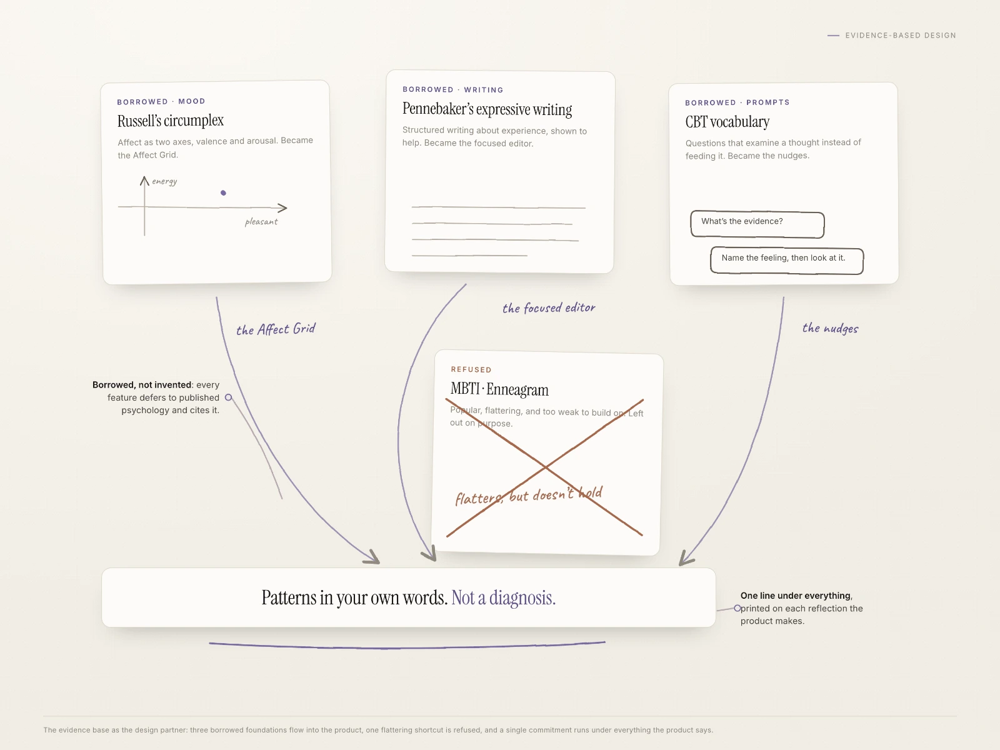
A focused two-step flow: write first, rate later
Writing and judging are different mental modes, so they became two steps. Step one is a distraction-free editor. Step two asks for mood and themes.
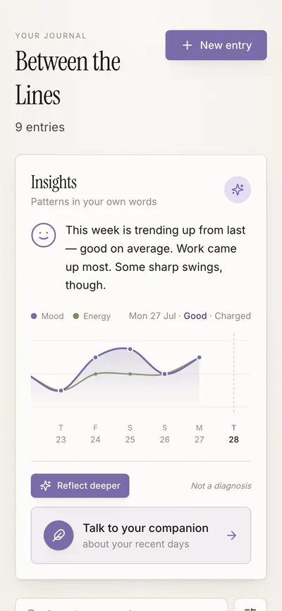
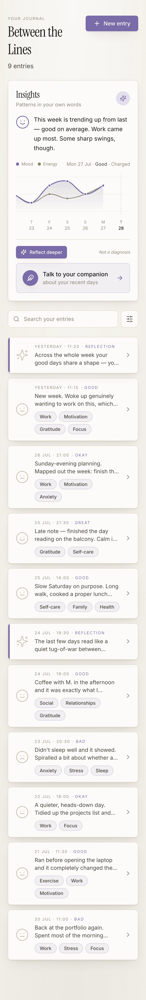
Mood became two axes, because calm and exhausted are not the same low
On a single sad-to-happy scale, calm and exhausted both score low, but they are very different days. So the emoji gave way to an Affect Grid, based on Russell’s circumplex: one axis for mood, one for energy, and one dot to capture both.
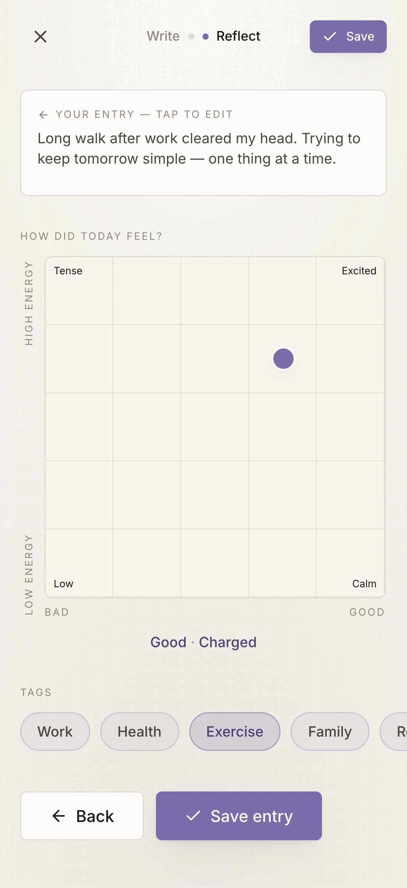
Dictation worked in Chrome and nowhere else, so it was rebuilt
The first version used the browser’s speech API, which failed silently outside Chrome. The rebuild records audio and transcribes it on the server with Whisper, so dictation works everywhere, including on phones.
It reads between the lines only when asked
The reward for journaling is the Between the Lines card. By default it compares this week with the last, next to a mood and energy trend, with no language model involved.
A deeper AI reflection is one deliberate tap away. Every entry does get a search embedding, so it can be found later by meaning.
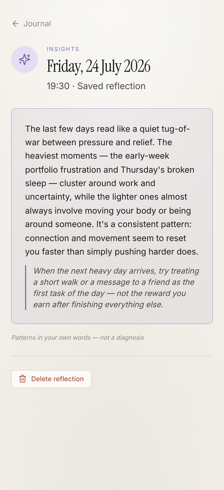
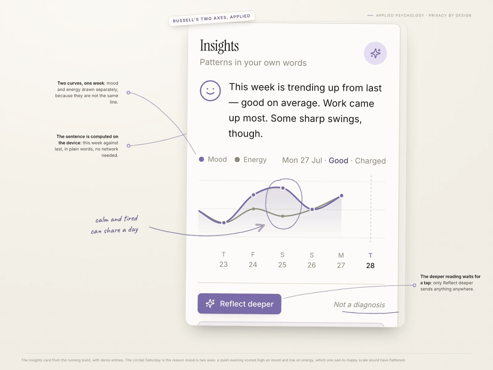
The Companion is built the opposite way from a generic chatbot
It opens from your page and quotes what your week actually says. It asks a question back before it answers one. When a message in English or Norwegian signals a crisis, it stops the conversation and shows emergency numbers.
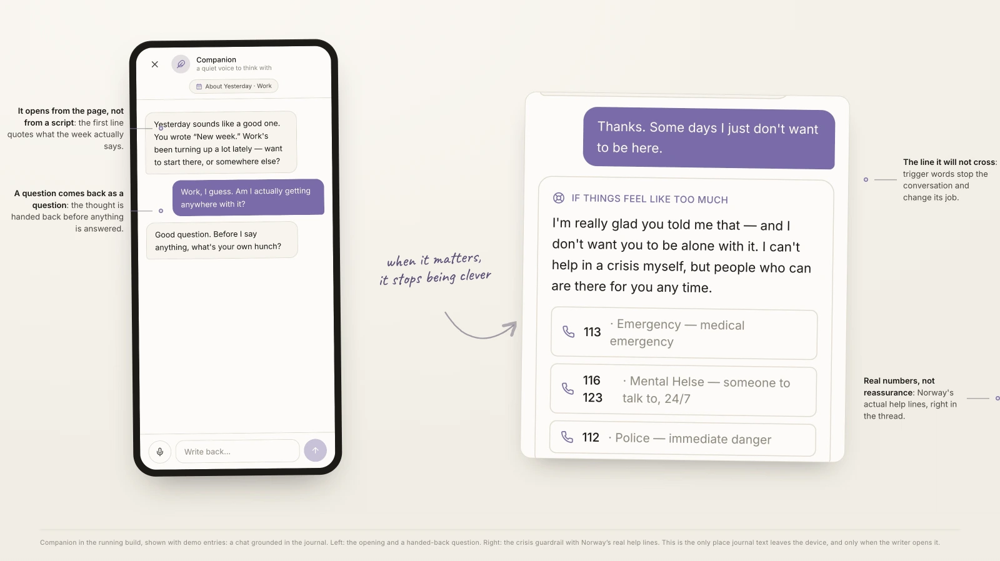
The same system, explained to a ten-year-old, to a professional, and as it was built
AI products affect people who will never read the code, so being able to explain the system is part of building it. Each part below has three explanations. Choose one, or read all three.
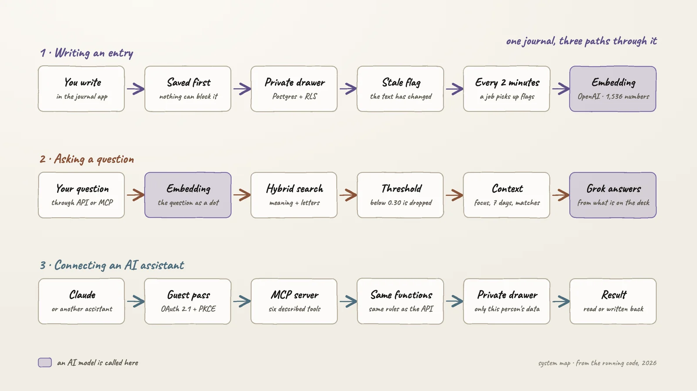
A private drawer for every person
Postgres · row-level security
Like I'm ten
Imagine a huge cupboard with a locked drawer for every person. When you open the app, the cupboard checks your key and opens only your drawer.
For professionals
Entries live in Postgres on Supabase, with row-level security on every user table. Server routes use a privileged role, so each one limits its queries to the signed-in user.
How I built it
The first version kept entries in the browser, the cheapest way to test whether writing felt right. Once it did, I moved them into a database with accounts.
Finding an entry by what it means
Embeddings · pgvector
Like I'm ten
Picture a giant map where every diary page is a dot. Pages about similar things sit close together, even in different words. "Worn out after work" lands next to "exhausted from the office". Your question becomes a dot too, and the app looks nearby.
For professionals
Each entry becomes one 1,536-dimension vector from OpenAI's text-embedding-3-small, stored in pgvector and compared by cosine similarity. Entries are short, so there is no chunking.
How I built it
Saving an entry must never fail because an AI service is down. So a database trigger only flags changed text, and a job running every two minutes computes the embeddings. If a run fails, the next one retries.
Searching in two ways at once
Hybrid search · trigrams · RRF
Like I'm ten
Two detectives look for the same page. One understands what you mean. The other checks the exact letters. Then they put their lists together, and a page that both of them found moves up.
For professionals
The top 30 entries by cosine similarity and the top 30 by trigram similarity are merged with Reciprocal Rank Fusion (k = 20). A search for "that argument" can find an entry that never uses the word.
How I built it
Most demo entries are in Polish, and the database has no Polish dictionary. Trigrams compare small groups of letters, so they work in any language and cope with word endings and typos.
Knowing when nothing matches
Similarity threshold · evaluation
Like I'm ten
If you ask for a page that does not exist, a bad helper brings you something anyway, and you believe it. So we drew a line: a page that is not similar enough stays on the shelf.
For professionals
Vector search always returns the nearest entries, even for nonsense. In the demo journal, gibberish scored up to 0.21 and real questions about 0.37 or higher, so the threshold went to 0.30.
How I built it
The first value, 0.15, would have handed 13% of the journal to the model for a nonsense query. I calibrated it once, with Claude Code, on a demo journal of 228 entries.
Looking things up before answering
RAG · context design
Like I'm ten
Before the Companion answers, a helper goes to the shelf and brings the pages that fit your question. It puts them on the desk, and the Companion answers from what is on the desk.
For professionals
Retrieval-augmented generation. For a question through the API or MCP, the server embeds it, runs hybrid search and builds the context from the focus day, the last seven days and up to 12 matching entries. If search fails, the Companion still answers from recent entries.
How I built it
A test question about something from seven months earlier got an answer from the last two weeks, because only those entries were in context. Adding search then pushed the current week out, so recent and relevant entries became two separate sets.
Keeping the AI in its place
System prompts · guardrails
Like I'm ten
The Companion carries a card with rules. Do not pretend to be a doctor. Only talk about what this person wrote. If someone sounds in danger, stop chatting and show who can really help.
For professionals
The system prompt forbids diagnoses and labels, and grounds replies in the person's entries. Prompts live on the server, so a browser cannot inject its own. A keyword check runs before the model is called.
How I built it
I kept the crisis check simple and independent of the model. When a message in English or Norwegian signals a crisis, the app skips the AI and shows emergency numbers in the conversation.
An engine that can be swapped
Model abstraction
Like I'm ten
The AI is like the engine in a car. Newer engines keep coming out, so the car is built to let you change the engine without rebuilding the whole car.
For professionals
Chat and embedding clients sit in one module: Grok for replies, OpenAI for embeddings. Changing the chat model is a one-line edit. Changing the embedding model means recomputing every stored vector.
How I built it
On the day the Companion launched, the provider retired the model I had chosen. Since then, each model name lives in one place.
A universal plug for AI assistants
Model Context Protocol (MCP)
Like I'm ten
MCP is a universal plug for AI assistants. The journal has one socket and a list of what it can do, so an assistant like Claude can plug in and say "write this down" or "find that page".
For professionals
A stateless MCP server over Streamable HTTP exposes six tools, such as create_entry, search_entries and ask_companion. Each has a typed schema, and the HTTP API and MCP share the same functions and rules.
How I built it
Tool descriptions turned out to be design work, with a model as the reader. The search tool tells it how to read the scores and that weak matches can come back. I use this connection myself: Claude can add an entry to my journal and read it back.
A guest pass, never your password
OAuth 2.1 · PKCE
Like I'm ten
You would not give a stranger your house keys, so you give the assistant a guest pass. It works for one hour. If someone steals an old pass and tries to use it, the whole set stops working.
For professionals
The journal is its own OAuth 2.1 authorisation server, with dynamic client registration, a consent screen and PKCE. Access tokens last one hour, refresh tokens rotate on every use, and replaying a used one revokes the chain.
How I built it
Claude's connectors do not accept a pasted API key, so connecting the journal needed a real authorisation flow. I specified the behaviour and the threat, a stolen token, and Claude Code wrote the implementation.
Who did what
I wrote the requirements, worked out the architecture with Claude Code, made the product and safety decisions, and checked the results in the running product. Claude Code wrote most of the code. I am a designer who builds, and I can explain every part above. The journal has no real users yet.
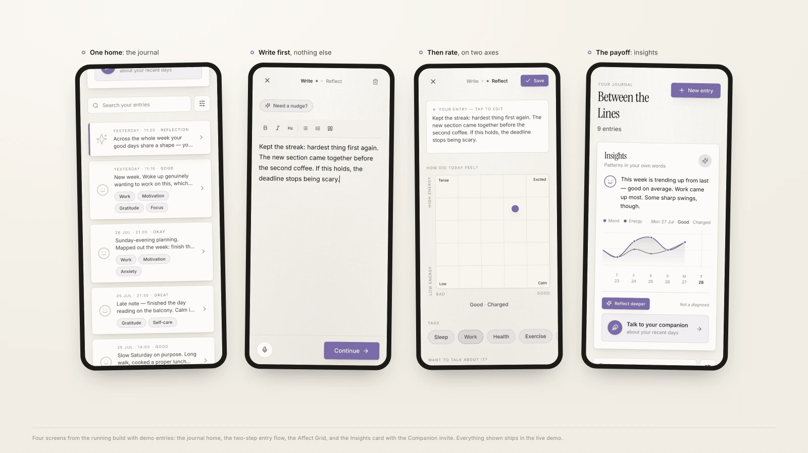
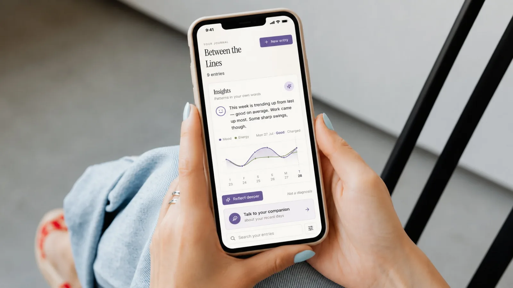
Not a mockup to imagine, a product to open.
The component that defines this product is the one most likely to lock someone out
A square you drag a dot into only works with a pointer, and it is the heart of this product. So it also works as a slider: focusable, driven by the arrow keys, and announcing its position in words, such as “pleasant, low energy”.
The Companion had a quieter bug: its typing indicator said nothing to a screen reader, so the wait was pure silence. It became a live region.
An automated scan catches the contrast. It does not catch a grid that only answers to a mouse.
What the project taught, and where it goes next
- Removing things helped more than adding them. The navigation, the clutter and the single mood scale all came out.
- People can trust an AI feature that is on demand, clearly labelled and never diagnoses.
- With no real users yet, every choice is still a hypothesis. Testing with people who keep a journal comes next.
The public material behind the framing
- Sentio University (2025). Survey of people with an ongoing mental health condition; about half use language models for mental-health support.
- Healthline; Toronto Metropolitan University; Psychiatric Times (2025 to 2026). Expert warnings that chatbots affirm rather than challenge, can state false information confidently, and are an adjunct, not a replacement.
- Norwegian GP-DEP Study; NCDNOR. Depression treatment and referral patterns in Norwegian general practice, and uneven access to specialised care.
- ScienceDirect welfare-state review (2024). Mental disorders as the costliest condition in Norway, close to three percent of GDP.